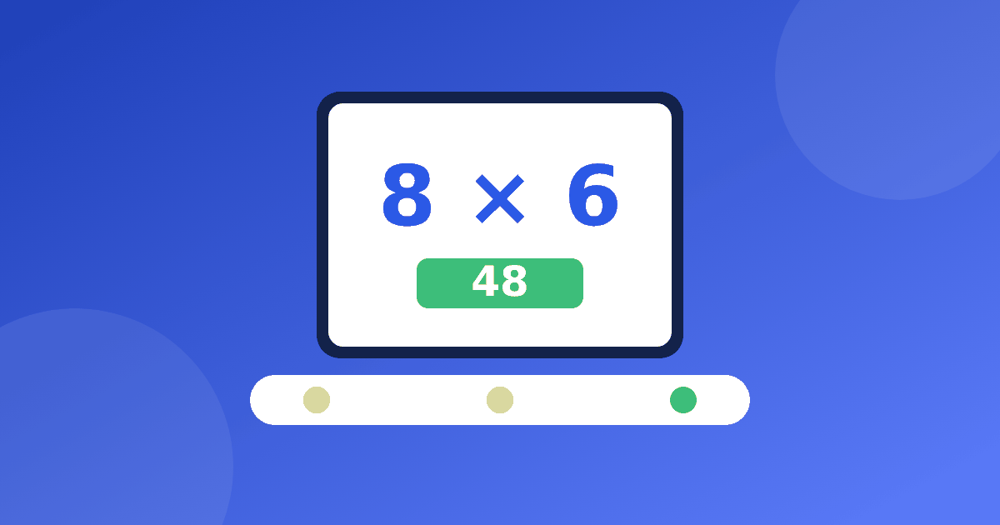

Как пользоваться онлайн-тренажёром для таблицы умножения

Онлайн-тренажёр хорош тем, что всегда под рукой и никогда не устаёт. Но у этой простоты есть обратная сторона: десять минут бездумных кликов могут не дать ничего, кроме усталости. Разберёмся, как сделать так, чтобы тренажёр по математике таблица умножения работал на вас, а не на привычку нажимать наугад.
Режим занятий
Начните с малого, и пусть математика таблица умножения не превращается в тяжёлую работу. Одно число за раз: например, только трёшки или только пятёрки. Когда ребёнок отвечает спокойно, добавьте соседнее число. Смешивать всю таблицу имеет смысл позже, когда отдельные строки уже знакомы.
- Длительность. Достаточно 5–10 минут за подход, лучше ежедневно, чем раз в неделю на час. Сколько времени нужно именно вашему ребёнку, подскажет статья сколько заниматься в день.
- Время. Выберите час, когда ребёнок не голоден и не раздражён, а не вечер после тяжёлого дня.
- Тишина. Выключите телевизор и уберите соседние вкладки.
- Конец. Закончите на удачном примере, а не на последней ошибке.
Хороший тренажёр не должен давить секундомером. Если на экране тикает таймер, ребёнок начинает угадывать, и ошибки закрепляются. В нашем тренажёре нет ни таймера, ни рейтингов: ребёнок соревнуется только с собой вчерашним.
Как построить одно занятие
Удобная схема на десять минут. Две минуты на разогрев: примеры из строк, которые ребёнок уже знает. Пять минут на новое число или на «список трудных». Ещё две-три минуты на лёгкие примеры, чтобы закончить уверенно. Если ребёнок хочет продолжить и не устал, пусть продолжает, но не заставляйте.
Если вы подбираете тренажер по математике таблица умножения для семьи, сравните два-три варианта вместе с ребёнком и выберите тот, где ему понятнее. Хорошо, если тренажёр показывает примеры в разном порядке, а не только по возрастанию. Тогда ребёнок отвечает не по инерции «после 3 × 4 идёт 3 × 5», а действительно вспоминает. Но для самых первых занятий нужен как раз привычный порядок строки: он помогает запомнить ритм.
Что делать с ошибками
Ошибка — не повод для разочарования, а подсказка, куда смотреть. Сказать «неверно» мало. Попробуйте такой порядок.
- Спросите: «Как ты считал?» Иногда ребёнок знает путь, но споткнулся на сложении.
- Вернитесь к картинке: 4 × 6 это 4 группы по 6 предметов.
- Найдите опору в соседнем примере. Если 4 × 5 = 20, то 4 × 6 = 20 + 4 = 24.
- Запишите ошибочный пример в «список трудных». Не больше трёх-четырёх примеров за раз, иначе список бесполезен.
- Вернитесь к ним завтра, а потом через два-три дня.
Если один и тот же пример не получается больше недели, не корите себя и ребёнка. Возможно, ему нужна другая опора, и о таких случаях пишем в статье ребёнок не понимает таблицу умножения.
Чем тренажёр не заменит родителя
Любой тренажёр, даже самый наглядный, — это инструмент. Чего он не умеет:
- Увидеть, что ребёнок устал, нервничает или просто хочет играть.
- Отличить понимание от везучего угадывания. Родитель может спросить: «Почему ответ такой?»
- Похвалить за упорство, а не только за верный ответ.
- Подсказать, когда пора остановиться и заняться другим делом.
Поэтому первые занятия с таким тренажёром лучше проводить вместе. Сядьте рядом, пусть ребёнок объясняет вслух, что делает. Через неделю-две можно отходить: сначала просто находитесь в комнате, потом заглядываете в конце занятия.
Вы можете спросить ребёнка после занятия, что было самым лёгким и что самым трудным. Ответ полезнее любой статистики на экране: он показывает, что ребёнок думает о занятии и где ему нужна ваша помощь. Попросите назвать один пример, который теперь знает точно. Так тренажер таблица умножения превращается в повод для разговора, а не в экран, за которым ребёнок сидит молча.
Что стоит искать в тренажёре
Когда вы выбираете, какой тренажёр таблица умножения подойдёт ребёнку, смотрите на пять вещей: объясняет ли он, а не только проверяет; нет ли давящего таймера и рейтингов; можно ли начать без регистрации; есть ли бесплатная часть; сохраняется ли прогресс. Наш тренажёр показывает примеры на картинках, занятия в нём короткие, регистрация не нужна, а прогресс хранится на вашем устройстве.
Для тех, кто выбирает, подробнее рассказано в статье про бесплатный тренажёр таблицы умножения. А попробовать можно сразу в тренажёре. Математика таблица умножения не требует рекордов: ей нужны регулярность, спокойный тон и взрослый рядом.